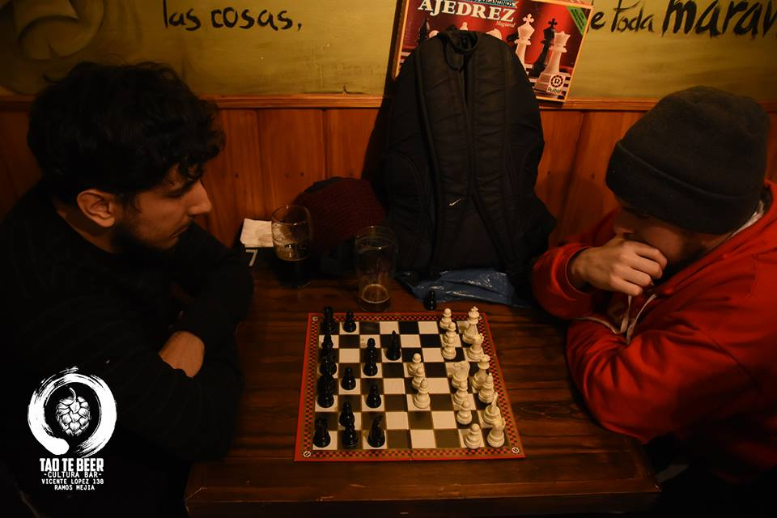

Hola, ¿cómo estás? Me llamo Leandro, soy el creador de Ajedrez Para Todos. Antes que nada, quiero agradecerte tu visita al sitio, y desearte de todo corazón que pases un buen rato en él. Te voy a contar mi historia, con la que seguramente te vas a sentir identificado en algunas cosas.
Mi papá me enseñó a jugar al ajedrez cuando tenía 5 años. Fue un amor instántaneo por el juego. Apenas unos días después de aprender a jugar, insistí tanto que papá y mamá me compraron mi propio juego de ajedrez una vez que habíamos salido a pasear y lo vi en un juguetería. Desde entonces, trataba de jugar aunque sea una partida al día con mi papá. Si bien el no era un gran jugador (de esto me enteré más adelante, ya que para mí era imbatible en ese momento), sabía los conceptos básicos y me los fue enseñando de a poco. Poco tiempo después mis padres se separaron y con ello perdí a mi compañero de juego. Si bien mi hermano sabía jugar, no estaba tan interesado como yo en hacerlo, además de que era algunos años mayor y prefería ocupar su tiempo en otras cuestiones. Por lo tanto, sólo jugábamos muy de vez en cuando. Cuando venía algún amigo a casa quizás podía jugar alguna partida, pero no era algo habitual. Las clases de ajedrez, dada la situación económica de mi familia, nunca fueron una opción. Así fue que al no tener a alguien con quien jugar terminé olvidándome del ajedrez por unos años. En ese momento yo no tenía la menor idea que el ajedrez se estudiaba, que había incontables libros sobre distintos aspectos del juego, que aún sin jugar se podía estar en contacto con él a través de distintas herramientas.
Así pasé unos cuantos años alejado del ajedrez, jugando esporádicamente alguna partida cuando tenía la ocasión (y disfrutando como aquella primera vez). Durante mi último año de primaria, antes de ingresar al viejo polimodal, la situación cambió por completo: durante una hora libre, Alejandro, mi preceptor de ese año, nos proponía varias actividades hasta que llegó a nombrar el ajedrez (en la escuela tenían un juego). Yo fui el único interesado de mis compañeros y amigos, pero desde ese día, en cada hora libre jugábamos partidas con Alejandro. Aprendí mucho jugando con él, y aún sin saber absolutamente nada sobre los conceptos del juego, fueron mis principios comenzando a entender sobre táctica, cálculo y estrategia, aún sin saber en ese momento que eran esas cosas (conceptos de los que si no estás al tanto, vas a descubrir en esta página). Ese año pasó muy rápido para mí, y al finalizar la primaria volvía a perder a un compañero de juego.
Ya en el primer año del polimodal (el polimodal es lo que actualmente son los últimos tres años de la secundaria), la vida me volvía a presentar un compañero ajedrecístico: conocí a Mariano, con quien un buen día, cuando faltó una profesora, aceptó para mi sorpresa ir a buscar el juego de ajedrez (aquel que el año anterior usaba para jugar con Alejandro). Al igual que hacía con mi ex preceptor, pasé todo ese año jugando ajedrez en las horas libres, esta vez con Mariano. Incluso para poder jugar mientras estábamos en clase, nos construimos un ajedrez de papel, que todavía guardo como uno de mis tesoros. Lamentablemente, Mariano repitió ese año, y si bien seguíamos siendo amigos, la distancia entre su casa y la mía, sumado a que al año siguiente yo comencé a trabajar, hicieron que fueran muy pocas las veces que nos pudimos reunir a jugar.
Durante la adolescencia volví a dejar el juego de lado, un poco por la falta de gente con quien jugar y otro poco porque es una etapa en la que el tiempo empieza a ocuparse en otras cosas. Aún así, me las ingenié para asistir a mi primer torneo. Era cerca de mi casa y la inscripción era gratuita: no tenía excusas. En este punto es conveniente aclarar que si bien todo lo que jugué con Alejandro y Mariano me había hecho mejorar mucho, la realidad es que todavía mi conocimiento sobre la teoría y los fundamentos básicos del juego eran prácticamente nulos. A raíz de eso, en la primera ronda del torneo recibí una soberana paliza contra un jugador evidentemente mucho más experimentado que yo y habituado a torneos. Esa tarde sentí mucha frustración, al no saber nada sobre el juego no podía razonar sobre qué había pasado. Pero no todo fue malo: en el torneo también descubrí que las partidas se anotan, que hay diferentes ritmos de tiempo de juego, que hay algo que se llama aperturas, que los peones son piezas vitales. Todas estas cosas pueden resultarte una obviedad (o puede que no, lo cual no es problema porque lo vas a descubrir en este sitio web), pero hasta ese momento yo no había tenido forma de saberlo. Estas grandes revelaciones no hicieron más que incrementar mi amor por el ajedrez. Después de ese torneo, donde descubrí distintas variantes que ofrece el juego y conceptos totalmente desconocidos para mí, decidí mejorar mi juego. Me sentía enojado conmigo mismo, me encantaba el ajedrez desde chico, pero la realidad es que no sabía casi nada.
A la semana siguiente del torneo, fui al Parque Rivadavia a comprar mi primer libro de ajedrez. No era un libro reconocido y probablemente tampoco era de los mejores. Pero era barato, claro y conciso, que era lo que yo buscaba en ese momento. Con ese libro aprendí los conceptos más básicos, algunas pocas aperturas sencillas de jugar y por iniciativa propia me di a la tarea de anotar mis partidas desde ese momento en más, cosa de tener una posibilidad de análisis al finalizarlas. Algunos meses más adelante, el destino quiso que se realice otro torneo en el mismo lugar del anterior. Por supuesto me presenté más motivado que nunca, dispuesto a ver cuanto había mejorado mi juego. El resultado superó todas mis expectativas: gané varias partidas amistosas antes del torneo, y en lo que fue el torneo, gané una y perdí dos. Como la vez anterior, y como casi siempre ocurre en el ajedrez una vez que lo entendemos mejor, con la derrota descubrí en que tenía que mejorar: si bien llegaba a posiciones aceptables, al no estar acostumbrado a jugar por tiempo, terminaba con mucha diferencia en el reloj, que por supuesto mis rivales aprovechaban.
Desde aquel segundo torneo, ya con 18 o 19 años, mi entusiasmo por el juego comenzó a bajar, con las presiones propias de llegar a la adultez. Si bien no jugaba seguido, sí ya con la ayuda de internet miraba partidas de Grandes Maestros y videos explicativos. Mi regreso al tablero se dio un par de años después, en un torneo que organizaba el lugar donde cursaba mis estudios. Es cierto que hacía mucho que no jugaba, pero mi confianza era muchísima, ya dominaba los fundamentos del juego, entendía los conceptos, conocía mucha teoría y había analizado numerosas partidas. Terminé ganando ese torneo de manera invicta, con 9 victorias y 2 empates. Mi juego había mejorado muchísimo sin siquiera sentarme al tablero.
Desde ese torneo sigo activo en el ajedrez, estudiando, mirando videos explicativos, siguiendo torneos internacionales, analizando a distintos jugadores, resolviendo ejercicios, jugando partidas online, leyendo cada vez que puedo y tratando de difundir el juego desde mi lugar.
En el año 2016, un año después de aquel torneo que tuve la suerte de ganar, para una actividad relacionada a mis estudios se me pidió pensar en un evento para una feria municipal a realizarse unos meses más adelante en el Día del Niño. Desde el primer momento sabía que tenía que hacer algo relacionado al ajedrez. Tras darle algunas vueltas al asunto, me puse en contacto con clubes y profesores locales para pedirles si podían acercarse a dar alguna charla para difundir el juego entre los chicos. Al no recibir fondos del municipio para la implementación de la actividad, no podía ofrecerles nada, así fue que la totalidad de ellos se negó a participar. En ese momento decidí organizar, con mucho sacrificio, yo mismo un torneo. Con ayuda de algunos vecinos que colaboraron desinteresadamente, pudimos comprar los tableros y relojes necesarios, más algunos refrigerios para que los chicos estén lo más cómodos posible en toda la jornada. El evento salió muy bien, tuvimos más participación de la que se esperaba, los chicos pasaron un lindo día y pudimos promover un poco más el ajedrez. Fue una lástima que no hayamos podido contar con algún profesor de ajedrez para que pueda contarles a los papás los beneficios del ajedrez en los chicos, pero la jornada fue por demás productiva y todo el esfuerzo realizado lo pudimos ver reflajado en la alegría de los chicos, que en muchos casos, al igual que me había pasado a mí y a tantos otros, les era muy difícil poder jugar con otras personas.
Después de la hermosa experiencia de organizar el torneo, tuve otra muy linda vivencia relacionada al ajedrez, al tener la oportunidad de visitar el año pasado Armenia, un país localizado en Asia. Armenia es uno de los países con mayor tradición ajedrecística, con un gran número de grandes maestros en relación a su cantidad de habitantes. En ese lugar, el ajedrez es una materia obligatoria en la primaria y la secundaria. En Armenia tuve la oportunidad de visitar una escuela de ajedrez, charlar con los profesores y jugar con algunos alumnos. Sin dudas una de las experiencias más lindas de mi vida. Desde entonces trato de acercar este juego y promoverlo, tratando de dar a los chicos posibilidades que yo no tuve, esa es mi idea principal con esta web.
Si llegaste hasta acá, te agradezco por haber leído mi historia, y espero que puedas disfrutar y aprender en esta página, que puedas entender que si bien lo más lindo es jugar partidas, existen muchas otras maneras de disfrutar del juego. Espero que disfrutes tu estancia y, en caso que creas que te puedo ayudar en algo, más abajo te dejo mi contacto. Hasta luego.
Leandro.